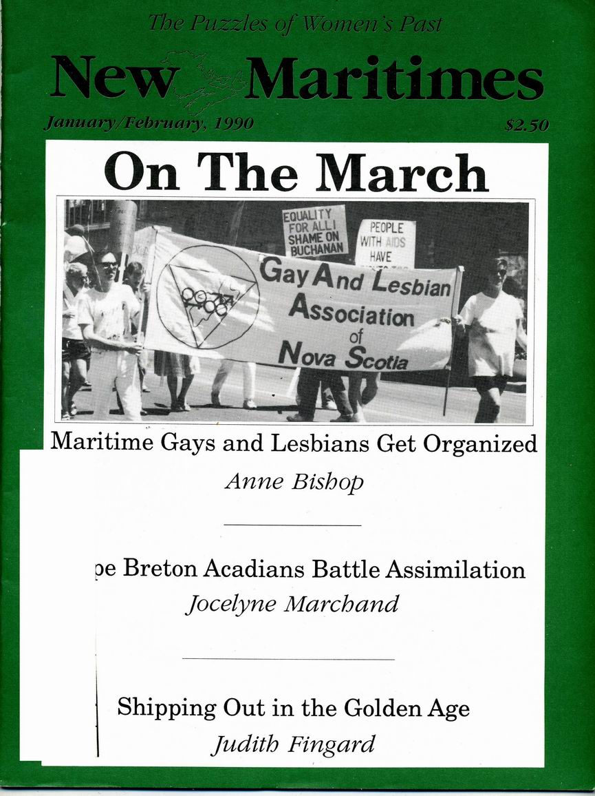

Information to change the world | |
Find Topics, Titles, Names related to your query |
Information to change the world | |
Find Topics, Titles, Names related to your query |
|
|

New Maritimes
New Maritimes was an independent monthly newsmagazine in the 1980s and 1990s covering political, cultural,
and economic issues in the Maritimes from a "no-holds-barred point of view."
Issues
|